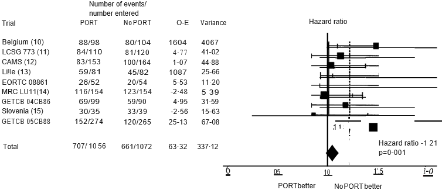
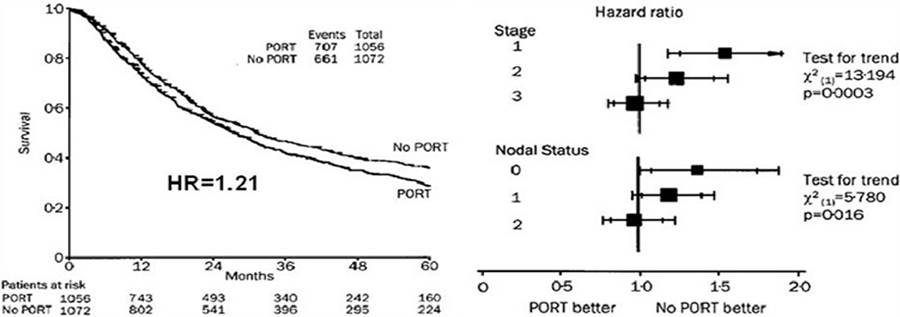
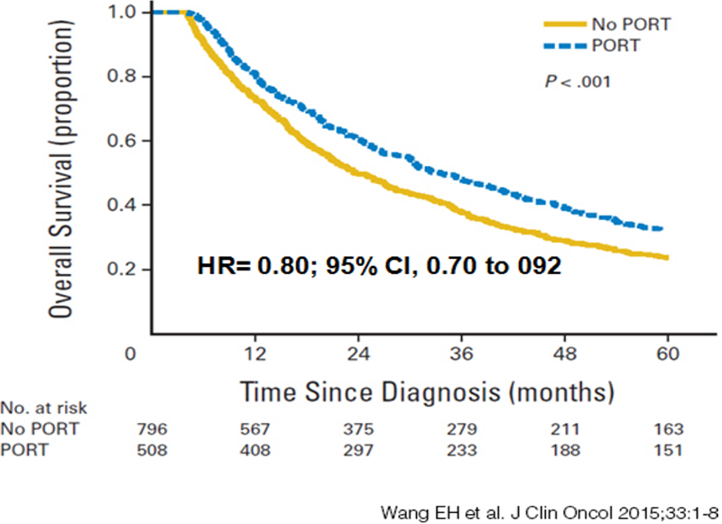

MÓDULO 2 : Tratamiento de los estadios precoces

2.2 Radioterapia postoperatoria en pacientes intervenidos
En el año 1998 se publicó un meta-análisis que incluía antiguos estudios randomizados que evaluaban el papel de la radioterapia postoperatoria en cáncer de pulmón (PORT) y demostró un incremento en el riesgo relativo de muerte del 21% para los pacientes que recibieron radioterapia postoperatoria.

Posteriormente el análisis por subgrupos demostró un efecto deletéreo en pacientes N0 y N1, mientras que en aquellos pacientes con afectación patológica N2 evidenciada durante la cirugía, no había una evidencia clara de efecto adverso.
Importante: En la actualidad no se recomienda la radioterapia postoperatoria en pacientes con estadio I y II, y en pacientes con N2 patológico se debe individualizar su indicación. Actualmente se encuentra en marcha el ensayo Lung-Art que evalúa la administración de RT adyuvante con 54 Gy en 27-30 fracciones en pacientes intervenidos N2.
Sin embargo, en un estudio retrospectivo norteamericano, los pacientes con estadios II y III sometidos a lobectomía o neumonectomía, cuyos márgenes fueron positivos (resección incompleta), tuvieron un aumento de la supervivencia con el uso de PORT.
A pesar de la escasa evidencia, se debe considerar la administración de RT adyuvante en pacientes con resección R1 y estadio Ib > 4 cm, estadio II y estadio III, administrándola siempre después del tratamiento de QT.
Estudio PORT: Análisis por subgrupos:

PORT en pacientes con estadios II y II con márgenes positivos:
